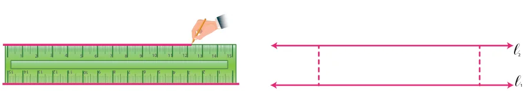
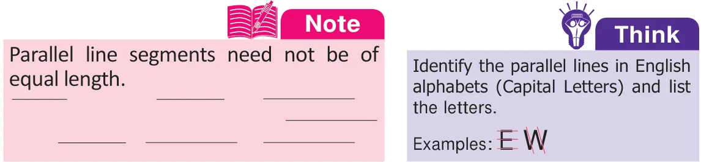
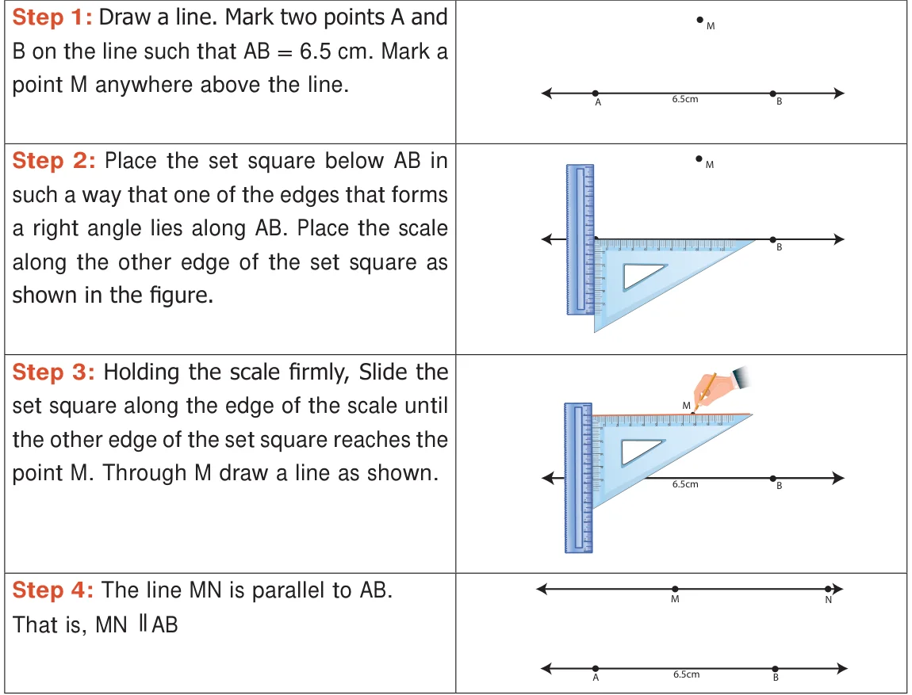
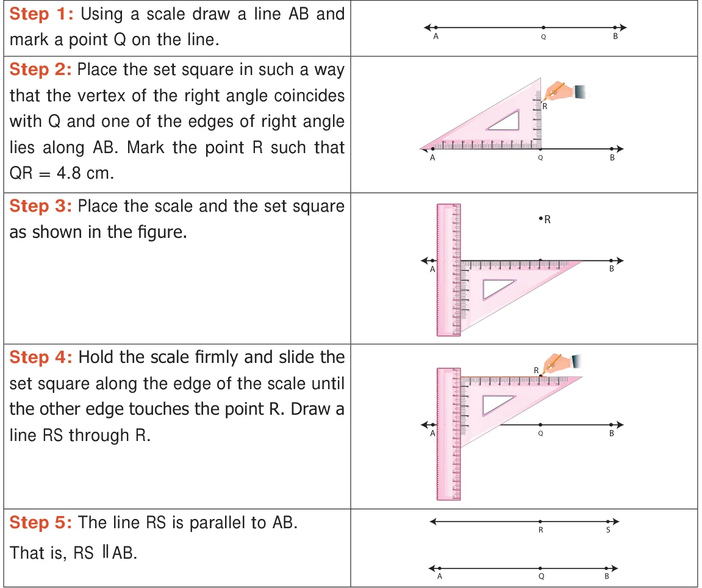
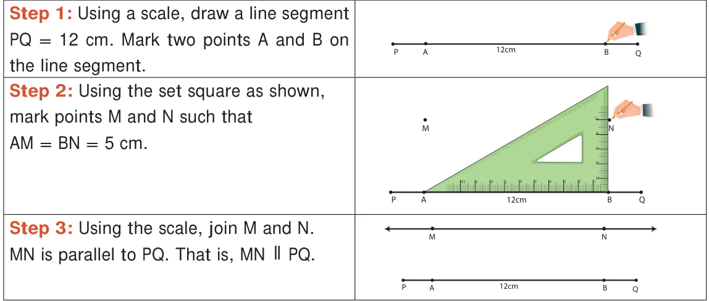

Construction of Parallel Lines
Place a scale on a paper and draw lines along both the edges of the scale as shown.

Place the set square at two different points on l_{1} and find the perpendicular distance between l_{1} and l_{2}. Are they equal? Yes. Thus, the perpendicular distance between a set of parallel lines remains the same.

Example 7: Draw a line segment \(AB = 6.5\) cm and mark a point M above it. Through M draw a line parallel to AB.

Example 8: Draw a line and mark a point R at a distance of 4.8 cm above the line. Through R draw a line parallel to the given line.

Example 9: Draw a line segment \(PQ = 12\) cm. Mark two points M, N at a distance of 5 cm above the line segment PQ. Through M and N draw a line parallel to PQ.
